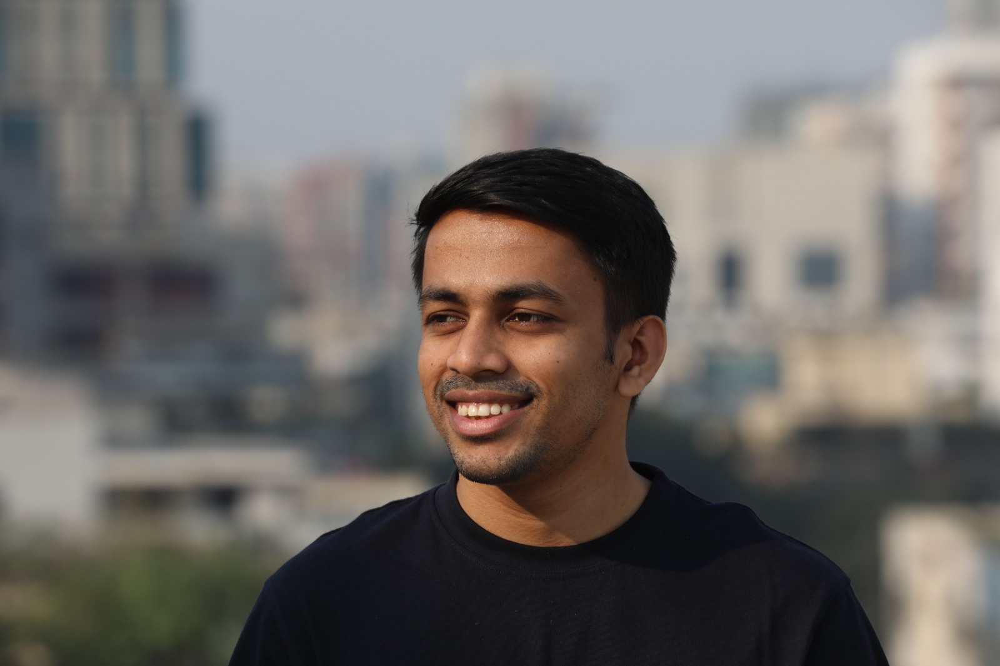
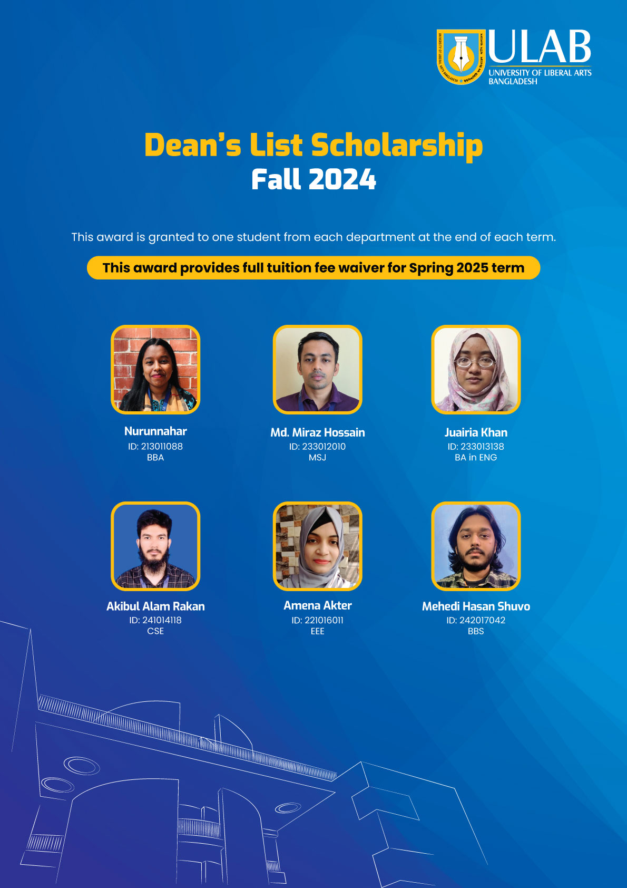
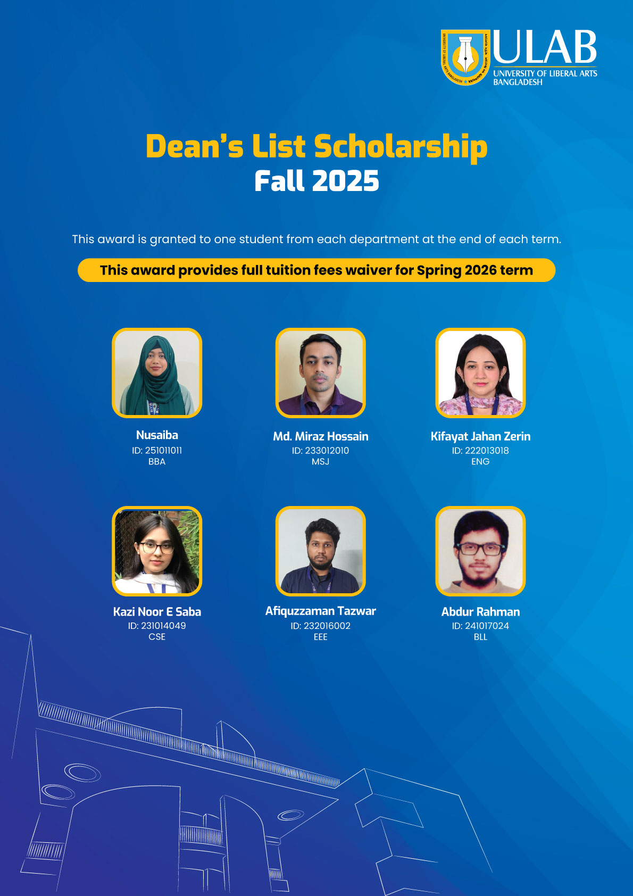
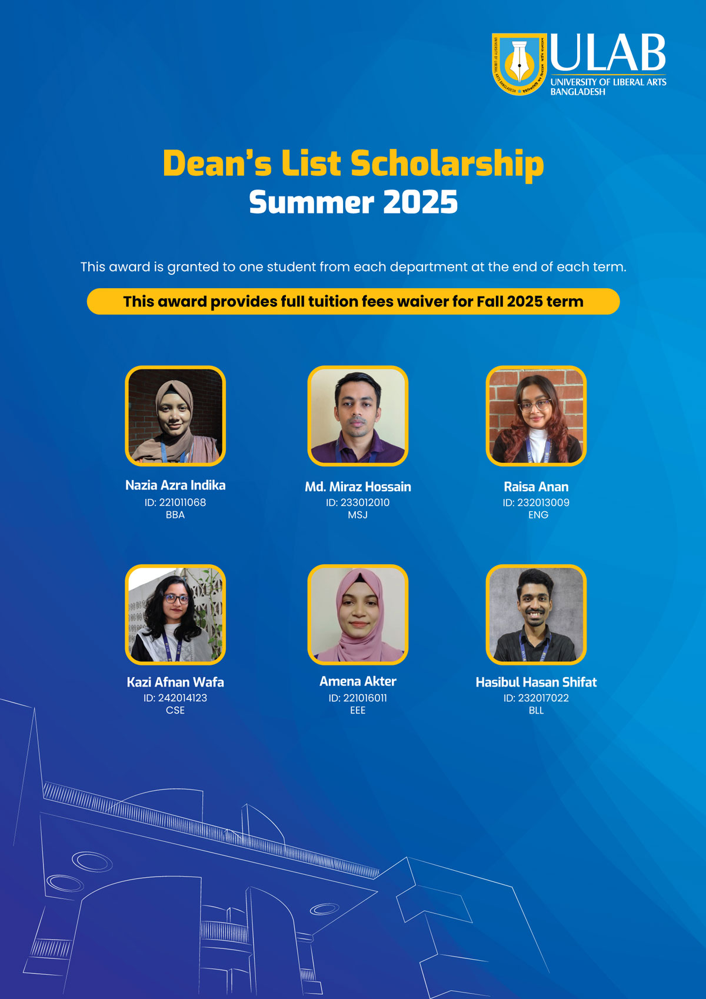
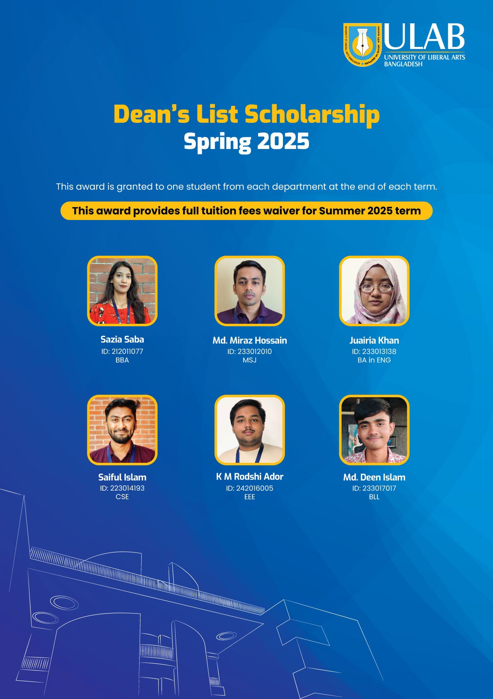

MMd. Miraz Hossain
Researcher · Journalist · Educator
I study how algorithms reshape truth, trust, and public knowledge — with a focus on South Asia's digital information ecosystems.
Currently
BSS Media Studies, ULAB — CGPA 3.98
Running an active mixed-methods study on algorithmic news feeds & misinformation susceptibility in Dhaka.
Learning
Research methods · Python for social science · Spanish (A2 → B1)
Most recently: Research Methodologies — Coursera / Queen Mary University of London (Apr 2026).
Education
-
Sep 2023 – 2027 (expected)
BSS in Media Studies and Journalism
University of Liberal Arts Bangladesh (ULAB)
CGPA 3.98 / 4.00 · Dean's List × 4 (Fall 2024, Spring 2025, Summer 2025, Fall 2025) · Relevant courses: Methods of Social Research, Data Journalism, Communication Research, Introduction to Data and Statistics, Digital Audience, Media and the Law.
-
Nov 2025
AI and Digital Transformation in Government
Oxford Saïd Business School · UNESCO
Executive education on digital government strategy, algorithmic accountability, and public-sector AI adoption.
-
Jan 2017 – Jun 2023
BA in English
University of Dhaka
President, English Department Art and Literary Club (2022–23).
Work experience
-
May 2026 – Present new
Research Assistant
FactWatch · ULAB's fact-checking initiative
Joined FactWatch — Bangladesh's pioneering fact-checking organisation — to support ongoing work on misinformation tracking, rumour-cascade analysis, and platform verification in the Bangla-language information ecosystem.
-
May 2025 – Present
Head of Investigations
ForensIQ · ULAB
Lead misinformation & media-propaganda investigations. Trained 300+ journalists and fact-checkers in OSINT and verification methodology. Founded Tools for Journalists, an open platform addressing digital-literacy gaps in South Asian newsrooms.
-
May 2025 – Present
Instructor, Academic English
Centre for Language Studies · ULAB
One-third of course content and delivery across two undergraduate batches. Focus: academic writing structure, fossilized error correction, critical communication.
-
Sep 2022 – Nov 2024; Jan 2026 – Present
Staff Feature Writer
The Business Standard · Dhaka
200+ in-depth features on governance, digital rights, technology, and freedom of expression. Sub-edited 50+ stories. Named among TBS Best Profiles 2022.
-
Dec 2024 – Nov 2025
Staff Correspondent
Netra News · Sweden-based
Investigated political corruption, military misconduct, and governance failures using OSINT and cross-source verification.
-
2017 – Present
Freelance Translator & Education Consultant
Independent — clients include World Bank, Waste Concern, SI-UK Bangladesh
Registered World Bank vendor for English–Bangla translation. Counselled 500+ students, edited 50+ SOPs, processed ~100 UK university applications.
Workshops & training I lead
Hands-on sessions on OSINT, verification, data journalism, and media literacy — delivered to newsrooms, fellowship cohorts, and university programmes across Bangladesh.
Recent update
Cure with Facts
Workshop facilitator · Digital Citizenship and Misinformation Resilience Program · ULAB × British Council
In March and April 2025, I facilitated sessions on platform misinformation and source verification for undergraduate students, focusing on how misleading content circulates online and how to respond with stronger verification habits.
Available for in-person or remote sessions. Invite me to speak →
Recognition
Dean’s List Scholarship × 4
Four consecutive semesters of full tuition waiver — Department of Media Studies & Journalism, University of Liberal Arts Bangladesh, 2024–2026. One student per department per term.

Fall 2024
Spring 2025
Summer 2025
Fall 2025Also recognised
- 2025 Selected for AI and Digital Transformation in Government — Oxford Saïd Business School · UNESCO executive cohort
- 2022 Named among TBS Best Profiles 2022 at The Business Standard
- 2022–23 President, English Department Art & Literary Club — University of Dhaka
- since 2019 Registered World Bank vendor for English–Bangla translation